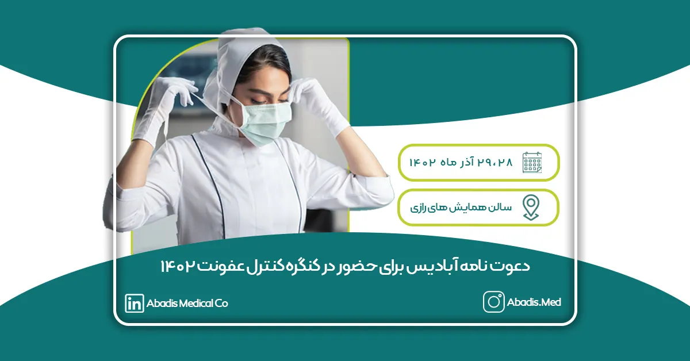
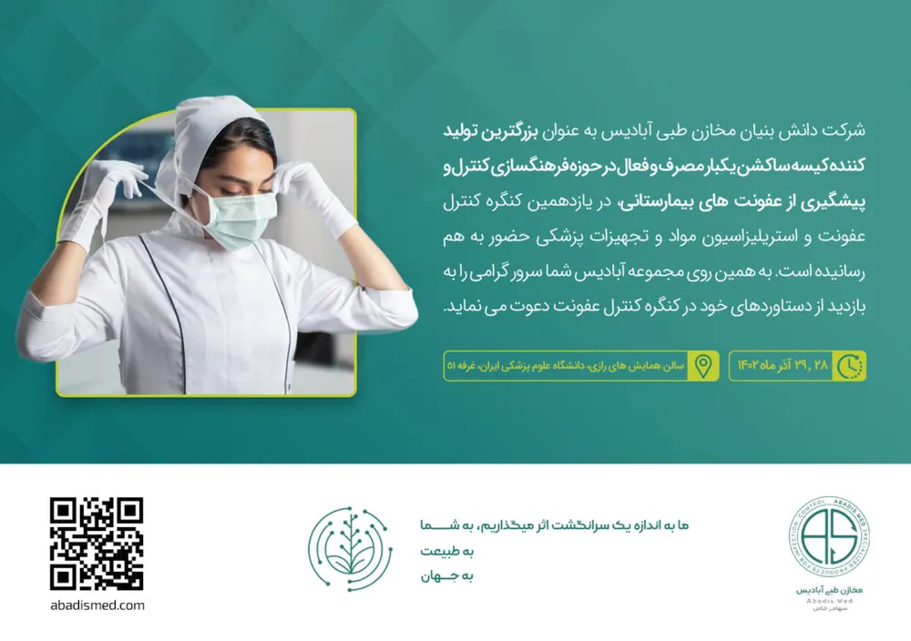

شرکت دانش بنیان مخازن طبی آبادیس از شما سروران گرامی برای بازدید از غرفه و دستاوردهایش در یازدهمین کنگره تخصصی و پنجمین کنگره بین المللی کنترل عفونت و استریلیزاسیون، مواد و تجهیزات پزشکی دعوت می نماید.
زمان برگزاری: 28 و 29 آذر ساعت 8 الی 18
مکان برگزاری: دانشگاه علوم پزشکی ایران، سالن همایش های رازی، غرفه 51
پیام رئیس دانشگاه علوم پزشکی شهید بهشتی و رئیس کنگره:
دانشگاه علوم پزشکی شهید بهشتی در مسیر دستیابی به جایگاه برتر در میان دانشگاههای جهان اسلام و همسو با اهداف عالیه نظام مقدس اسلامی و چشم انداز علمی کشور،برنامه ای منسجم و مناسب را طراحی و آغاز نموده است. بی شک بهره گیری از افکار و نظرات اندیشمندان و صاحب نظران علمی داخلی و خارجی نقشی موثر و بی بدیل در نیل به این مقصود ایفا می کند و برای این دانشگاه بسی مغتنم خواهد بود. از این روی بسیار مفتخریم که برگزاری یازدهمین كنگره تخصصی و پنجمین کنگره بین المللی کنترل عفونت و استریلیزاسیون،مواد و تجهیزات پزشکی را در تاريخ 28 الی 29 آذر ماه 1402 به همراه جشنواره انتخاب آثار و تحقیقات برتر حوزه کنترل عفونت و کارگاههای تخصصی در مرکز همایشهای بین المللی رازی اعلان و از اساتید،دانش پژوهان و همکاران محترم برای حضور ارزشمندشان در این همایش علمی دعوت کنیم.با همه پیشرفت هایی که در علم پزشکی اتفاق افتاده بیماری های عفونی هنوز هم از جمله خطرناک ترین بیماری های تهدید کننده جان بشر به شمار می آیند،به گونه ای که پیشگیری وکنترل عفونت های بیمارستانی هم اکنون به یکی از دغدغههای اصلی مراکز درمانی تبدیل شده است.هدف این کنگره یکپارچه سازی و هماهنگی بین کلیه دستگاهها و نهادهای مرتبط و فعال در حوزه کنترل عفونت و استریلیزاسیون به منظور ایجاد یک عزم ملی می باشد.این كنگره با حمایت دانشگاه علوم پزشکی شهید بهشتی،انجمن کنترل عفونت و مجمع خیرین سلامت کشور و با همکاری معاونتهای بهداشت،درمان وتوسعه وزارت بهداشت،درمان وآموزش پزشكی،سازمان غذا و دارو،سازمان نظام پزشکی،مركزتحقيقات بيماریهای عفونی وگرمسيری،مرکز تحقیقات مقاومتهای میکروبی،دانشگاه علوم پزشکی تهران،دفترمديريت بيمارستانی و تعالی خدمات بالينی،مركزسلامت محيط وكار،مركزمديريت بيماریهای واگیر،دفتر نظارت واعتبار بخشی اموردرمان،دفتر توسعه منابع فیزیکی و امور عمرانی وزارت بهداشت،دانشگاه علوم پزشکی ایران،سازمان ملی استاندارد ایران،سازمان تامين اجتماعی،سازمان حفاظت محيط زيست،پژوهشگاه استاندارد،سازمان جهانی استریل،انجمن متخصصین تجهیزات پزشکی کشور وآزمايشگاه مرجع سلامت،همراه با اعطای امتیاز آموزشی برای پزشکان عمومی و متخصصین مرتبط از جمله متخصصین بیماریهای عفونی، آزمایشگاه ،دندانپزشکی،داروسازی،گروههای پرستاری و اتاق عمل و مامائی،مدیریت خدمات بهداشتی درمانی،مهندسی پزشکی،مهندسی بیمارستان،بهداشت محیط،بهداشت حرفهای،سلامت در حوادث و بلایا و سیاست گذاری سلامت برگزارمی شود.در این کنگره تازه ترین دستاوردها درحوزه کنترل عفونت و استریلیزاسیون،مواد و تجهیزات پزشکی مورد بحث و تحلیل صاحب نظران قرار خواهد گرفت.امید است ضمن برگزاری کنگره ای پربار،میزبان شایسته ای برای همه میهمانان ارجمند باشیم.
با آرزوی توفیق الهی
دکتر زالی
رئیس دانشگاه علوم پزشکی شهید بهشتی و رئیس کنگره
برای اطلاع از برنامههای یازدهمین کنگره کنترل عفونت اینجا را کلیک کنید.

شرکت مخازن طبی آبادیس در سال گذشته، در دهمین کنگره کنترل عفونت ارائه مقاله ای با عنوان “بهبود اثرات زیست محیطی ناشی از پساب های عفونی بیمارستان ها با استفاده از کیسه های ساکشن یکبار مصرف” حضور داشت.
در یازدهمین کنگره تخصصی کنترل عفونت نیز منتظرتان هستیم …
برای مشاهده گزارش یازدهمین کنگره کنترل عفونت کلیک کنید.